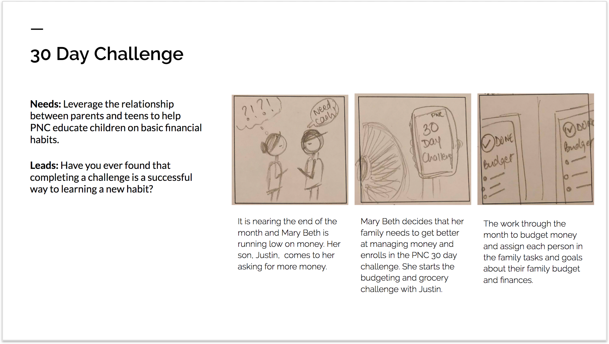
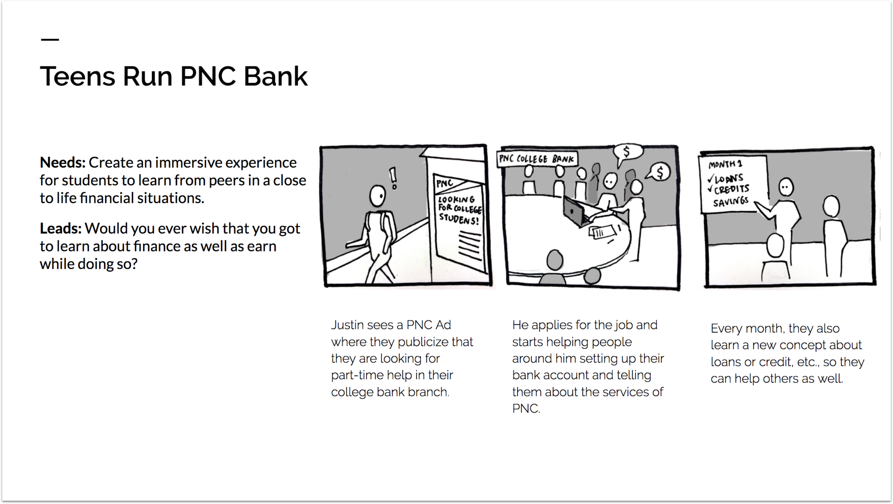

QUICK FACTS
- Role: Service Designer
- Timeline: October 2017 to December 2017
- Client: PNC Bank
- Teammates: Reva Pabba, Tiffany Lai, Mike Yilin Dong, Xuejiao Liu
- Skills: Stakeholder Analysis, Research (Ethnographic + Guerrilla), User Stories, Service Blueprint, Prototyping, and Product Design/Management
PROBLEM
The main goal of PNC Bank is to increase the financial literacy in teens. In the past, they have tried conducting workshops to do the same but it has not been well received by the teens. They really want to establish a connection with teens who are within the age group of 12-20 years old. Most of the teens they have enrolled in the services are there because of their parents and are not really engaged with PNC.
They want to use technology to enter the lives of the teens and engage them in a way that no other bank has done before in the area to help them stand out from the crowd.
PNC want to ensure that they enters the life of the teens early so that they can have a future client as well because it is through the teens that they can get their friends to be clients as well and also engage them in their services like loans, credit cards, etc.
SOLUTION
The solution for this problem was to target the teens in an indirect way. We decided to approach the solution of the problem through the parents. Since we know that parents are the largest, direct influencers in the lives of the teen, we decided to engage them first and then through them, engage the teens.
The solution was designed in the form of a 4 week 7 day challenge for the entire family where they would carry out tasks that would teach them about a domain of financial literacy.
This engages not only the teens but the entire family as long as they are connected on the platform. The reason why this solution works is because the entire family can get connected and have combined tasks as well. This breaks the barrier of not sharing financial knowledge between the parents and the teens better in case they need to share more financial knowledge in the future.
STAKEHOLDER ANALYSIS
After meeting with PNC, the first step was to know about the stakeholders that would be involved in this process. So, the research that we conducted was centered around -
- PNC Bank and its Services
- Parents, their financial literacy and engagement with their teen's finances
- Teens, their financial literacy,spending habits and the latest technology that catches their eye
There are 2 things we notice with the Stakeholder Analysis Map, they are -
- PNC has a relationship with only the parents
- Most of the influences that the parents have are the same as the teens
It was through this mapping, that we decided to design a service that would be catered to the parents and through them, it will reach the teens.
SOLUTION DESIGN
From the stakeholder analysis, we identified the key players and built out the personas and the scenarios they might encounter from the survey results and Gurriella research that we conducted. One of the main things we noticed was that unless there was a trigger to care about finance, irrespective of the age, no one cared about it. So, the main idea for all the possible solutions was to ensure that there was a constant trigger to get the users to care about their finances.

-
PNC Challenge:

This is an application that people will have to download. The application has challenges for 30 days and it will involve the entire family. Everyday, there will be a financial challenge allocated to everyone based on their age. It is their responsibility to finish that exercise and log it into the application. Once, the logging in is done, the entire family can see it. This way, in case a family member does not carry out a task, others in the family can make sure he/she complates it thus, holding each other responsible. -
Teens run the PNC Bank:

Here, PNC will give part-time jobs or internships to the teens who are interested in earning apart from their school work. Here, the parents are not involved at all. PNC starts a rotational program where each of the teen works in a particular department for a week / any other length of time as deemed fit by PNC. In each department, there will be a problem that will be given to the teens to solve that revolves around finances like loan management, credit score, etc. At the end of the week, they need to give a presentation of the potential solution to the stakeholders who can vet it and give them ways in which their solution can be more waterproof. After this, the department will change. This model works well because we attract teens who are already interested in learning about finances and a weekly challenge can keep them active throughout as they learn by doing.
We then went around taking to all the stakeholders trying to validate the storyboards that we had just built. Some of the feedback we received around the ideas were:
-
PNC Challenge:
- Teens and Parents alike were interested in the application
- The main motivation for the parents to take part in the challenge was that they can raise a financially responsible teen with minimum effort.
- The teens on the other hand did need motivation in terms of something tangigle to keep completing the challenges.
- The teens and parents both were really thrilled about the idea when it was mentioned that the entire family could have their own leaderboard and they could see who is leading. The parents also thought that this would keep their teens engaged plus the teens could remind them to complete the challenge in case they were too busy with their schedule. -
Teens run the PNC Bank:
- Teens were more comfortable with weekly challenges as opposed to a month long challenge.
- Most of the parents really liked the idea because a bank showing so much interest is always a good thing and they were happy with the bank.
- Teens and Parents both thought that it would really look good on the resume which would be great for the teen's future as well
FINAL DESIGN
Through the validation process, we decided to go with the family challenge as PNC also wanted moderate interaction with the teens. The final design had challenges on 4 different domains after a discussion with PNC. The domains were:
- Savings
- Credit
- Loans
- Budgeting
Each of the challenge will be a week long and after the week, the teen will get an award that will be set by the parents. It could be something monetary or even just a contribution towards something the teen needs.
After the entire concept was finalized, we went ahead and made the service blueprint to find the potential breakpoints that might arise in the application. We thought about about the databases that have to be managed and integrated as well.
One of the major database that needs to be created is the challenge database. Here, the challenges have to be based on the following criteria:
- Based on the age
- Based on the bank balance - Needs to have an account with PNC
- Based on the interest in financial learning - special topics, etc.
- Based on their occupation / work